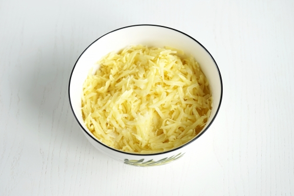
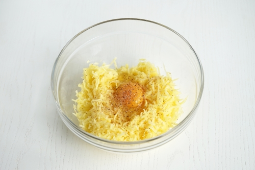
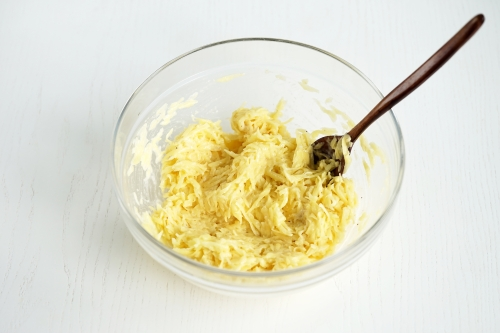
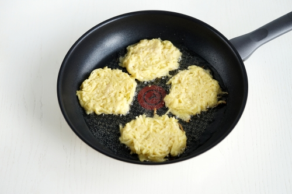
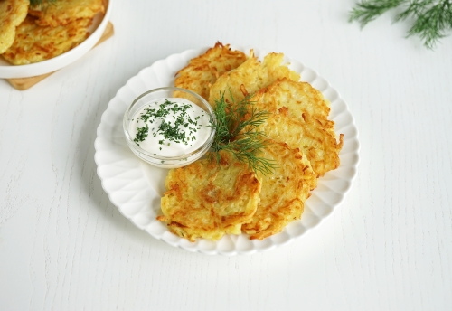

Драники
Ингредиенты:
- Картофель - 600г
- Лук репчатый - 1 шт
- Яйцо куриное - 1шт
- Мука пшеничная - 2ст.л
- Масло растительное - 4 ст.л
- Соль - по вкусу
- Специи - по желанию
Приготовление:
- Очистить картофель от кожуры и промыть. Натереть картофель на крупной тёрке. Добавить к картофелю соль и перемешать. Оставить на пять минут, чтобы картофель дал сок. Не игнорируйте этот шаг, ведь именно он помогает сделать блюдо максимально вкусным. Если не дать картофелю пустить сок, а после его не отжать, то в процессе выделится много лишней жидкости, а значит нам понадобится больше муки, и драники уже не будут такими нежными и хрустящими. 
- Отжать руками лишний сок с картофеля и переложить его в глубокую миску. В середине сделать углубление и вбить в него одно куриное яйцо. При желании можно добавить немного мускатного ореха. Он благородно оттеняет вкус картофеля и придает простому блюду изысканный вкус.На этом этапе можно также дополнительно добавить другие ингредиенты по вашему желанию. Например, измельчённую зелень, сыр или мелко нарезанный бекон. Очень хорошо картофель сочетается также с орегано и репчатым луком. Всё хорошо перемешать до объединения. Однако, если использовать добавки, рецепт уже будет авторским, а не классическим 
- Всыпать к картофелю муку и хорошо перемешать с помощью ложки или лопатки. В классическом варианте драников используется пшеничная мука. Если вы хотите разнообразить ваше блюдо, то её можно заменить на то же количество рисовой муки. В этом случае драники получатся ещё более хрустящими.Не стоит убирать муку из рецепта вовсе. Конечно, драники непременно получатся, но будут более жирными на вкус. Именно мука помогает достичь максимально нежного и гармоничного вкуса. Хотя и тут важно помнить про меру, ведь стоит чуть переборщить, и текстура драников станет более плотной и не такой вкусной. 
- Влить на сковороду часть растительного масла. Поставить сковороду на огонь чуть ниже среднего. Хорошо прокалить масло на сковороде. Это очень важно, чтобы драники не прилипали к сковороде. Как только масло прогреется, приступать к жарке драников. Столовой ложкой брать картофельную массу и выкладывать на сковороду, формируя драник.Обжаривать картофельные драники на сковороде на огне чуть ниже среднего до красивого золотистого цвета и румяных краёв. Перевернуть драники на другую сторону и так же обжарить. Не стоит делать огонь слишком сильным, иначе драники быстро приготовятся снаружи и останутся сырыми внутри. Также не стоит накрывать сковороду крышкой, в этом случае драники не получатся такими хрустящими по краям. 
- Обжарить таким образом все драники поочерёдно. В процессе приготовления картофель будет впитывать масло, поэтому во время готовки его нужно немного подливать на сковороду. Готовые драники выложить на тарелку с бумажным полотенцем. Это нужно для того, чтобы в бумагу впитался лишний жир.Подавать картофельные драники горячими. Сервировать их можно со сметаной или любым другим любимым соусом, например, томатным или чесночным. Очень хорошо драники сочетаются со свежими овощами и зеленью. Картофельные драники очень вкусные и в холодном виде. Их удобно взять с собой на работу, в дорогу или на пикник. Картофельные драники на сковороде по классическому рецепту готовы. Приятного аппетита! 
Слоёные булочки
Ингредиенты:
- 200 мл воды теплой
- 200 мл молока теплого
- 2 яичных белка (желтки оставить для смазывания)
- 0,5 чайной ложки соли
- 1 пакетик свежих дрожжей или 2 пакетика сухих(14 г примерно)
- 2 ст ложки сахара
- 200 мл растительного масла
- 750-800 г муки (может понадобиться чуть больше)
- 125 г сливочного масла мягкого для смазывания теста
Приготовление:
- Раскатываем дрожжевое слоеное тесто в прямоугольный пласт толщиной 0,5 см.
- Смазываем тесто мягким сливочным маслом по всей поверхности, не доходя сантиметра 3 до края.
- Посыпаем сахаром и корицей, а также щепоткой соли, также не доходя сантиметра 3 до края.
- Сворачиваем тесто в рулет. Фиксируем край.
- Разрезаем рулет на 16 частей.
- Можно развернуть слои, чтобы получились розочки
- Выкладываем булочки с корицей на противень, выстеленный бумагой для выпечки или фольгой, присыпанной мукой.
- Оставляем булочки из дрожжевого слоеного теста на расстойку примерно на 1 час под пленкой или полотенцем.
- Булочки-улитки из слоеного теста, с сахаром и корицей, выпекаем в разогретой духовке при температуре 170-180 градусов до румяности (15-20 минут).

Клубничный пирог
Ингредиенты:
- сливочное масло — 100 г
- сахар — 1 стакан
- куриные яйца — 3 штуки
- разрыхлитель — 1 чайная ложка
- ванилин — по вкусу
- соль — щепотка
- молоко — 3 столовые ложки
- клубника — 250 г
- пшеничная мука — 1 стакан
- сметана — 2 столовые ложки
Приготовление:
- Клубнику тщательно вымыть.
- Клубнику очистить от "хвостиков". Крупную разрезать на 2-4 части. Включить духовку.
- На минимальном огне растопить сливочное масло.
- В миску вылить растопленное масло, добавить сахар.
- Затем добавить яйца, соль, ванилин и разрыхлитель.
- Все тщательно перемешать.
- Влить молоко. Перемешать.
- Муку просеять и добавить частями в тесто.
- Все тщательно перемешать. Тесто должно быть по консистенции как густая сметана. Если есть необходимость муки добавлять сколько нужно.
- Форму смазать маслом, обсыпать мукой.
- Вылить тесто в форму.
- Распределить равномерно клубнику.
- Поместить клубничный пирог в разогретую духовку на среднюю полку.
- Выпекать пирог с клубникой при 180 градусах до золотистости (30-40 минут).
- Готовый клубничный пирог остудить, разрезать на кусочки.Приятного аппетита!
Профитроли
Ингредиенты:
- Сливочное масло - 100 г
- Щепотка соли
- Вода - 250 г
- Мука пшеничная - 150 г
- Разрыхлитель - 3 г
- Яйца - 4-5 шт (общий вес яиц без скорлупы 233 г)
- Любой крем (заварной, сливочный, крем-чиз, масляный, шоколадный и тд.)
- Повидло, варенье, джем
- Паштеты, икра, рыба, ветчина и тд
Приготовление:
- Готовим тесто на профитроли с заварным кремом.Нам понадобится вода, сливочное масло, соль, мука, яйца.
- Как приготовить профитроли с заварным кремом:Наливаем стакан воды в кастрюлю и ставим на огонь.
- Стакан муки просеиваем.
- Масло я растапливаю в микроволновке
- Добавляю масло в воду, туда же соль. Доводим до кипения.
- Добавляем в воду с маслом муку, постоянно перемешивая.
- Оставляем минуты на 2 на небольшом огне, хорошо перемешивая тесто. Остужаем.
- Яйца разбиваем и слегка перемешиваем венчиком.
- Постепенно вводим яйца в заварное тесто, перемешивая до однородности после каждой порции. (Можно просто добавлять яйца по одному.) Тесто будет как бы делиться на кусочки, но потом образуется однородная масса. Я перемешивала вилкой, слегка наклонив кастрюлю.
- Заварное тесто получается такое, как на фото.
- На противень кладем лист пергамента, слегка смазываем маслом.
- У меня нет кулинарного шприца, и я чайной ложкой выкладываю тесто на противень.Помещаем будущие профитроли минут на 30-35 в духовку, разогретую до 180-200 градусов.
- Вот такие профитрольки. Оставляем, пусть остывают.
- Готовим заварной крем. Молоко выливаем в кастрюлю, доводим до кипения, убираем, чтобы остыло.
- Желтки перемешиваем с мукой, сахаром, ванилином или ванильным сахаром и щепоткой соли.
- Добавляем в молоко желтковую смесь
- Слегка взбиваем миксером (секунд 20), ставим на медленный огонь на 5 минут. Постоянно помешиваем. Потом накрываем крышкой и убираем в холодильник (подождите, пока крем остынет)
- Набираем в шприц заварной крем (у меня обычный медицинский)
- Можно сделать надрез в пирожных и наполнить их кремом с помощью ложки
- Наполняем заварные пирожные кремом.
- Профитроли с заварным кремом готовы. Приятного чаепития!
Пломбир
Ингредиенты:
- Сливки 33% (холодные) - 300 г
- Молоко – 500 мл
- Желтки – 5 шт.
- Сахар – 150 г
- Ванилин – 1 г
Приготовление:
- Немного нагреваем молоко с ванилином (или ванильным сахаром, или ванилью).
- В отдельной ёмкости протираем лопаткой желтки с сахаром.
- Добавляем часть молока (примерно стакан) к протёртым желткам, перемешиваем до однородности.
- Вливаем полученную смесь к оставшемуся молоку и увариваем до небольшого загустения на маленьком огне, постоянно помешивая.
- Важно не переварить! По времени сказать сложно. Я уваривала на очень медленном огне около 10 минут. Ориентируйтесь не на время, а на густоту. Как только заварная основа начинает как бы обволакивать лопатку, снимаем с огня и полностью остужаем.
- Взбиваем сливки (они должны быть холодными) до «мягких пиков». Взбивать начинаем на медленной скорости, постепенно увеличивая до максимума.Вводим к ним полностью остывшую молочно-яичную смесь.
- Перемешиваем всё до однородности.Ставим мороженое в морозилку на 30 минут.
- Хорошо пробиваем массу погружным блендером в течение двух-трёх минут, чтобы избавиться от кристалликов льда.Процедуру повторяем трижды: 30 минут замораживаем, хорошо пробиваем блендером и снова на 30 минут в морозилку. Или просто воспользуйтесь мороженицей
- После этого переливаем мороженое в форму и отправляем на полную заморозку
- Перед подачей дайте постоять мороженому некоторое время при комнатной температуре. Так настоящий пломбир будет удобнее красиво выкладывать.Если у вас нет специальной ложки для мороженого, её можно заменить обычной - смачиваем ложку в горячей воде, вытираем насухо и набираем мороженое, при этом мороженое само скручивается в красивую трубочку.